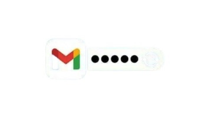

How to Reset a Forgotten Gmail Password
Forgot your Gmail password? Don’t panic — Google’s account recovery system makes it possible to get back in, as long as you still have access to your recovery email, phone, or security questions. Follow these steps.
1. Go to Google’s Account Recovery Page
- Open any browser and go to https://accounts.google.com/signin/recovery.
- Enter the Gmail address you’re trying to recover and click Next.
2. Confirm Your Identity
Google will try to verify that it’s really you. Depending on your setup you might see one or more of these:
- A prompt on your signed-in phone.
- A text message with a code to your recovery phone number.
- An email sent to your recovery email address.
- Enter the code or tap “Yes” when prompted.
3. If You Don’t Have Access to Your Recovery Info
Click Try another way on the recovery page. Google will cycle through other options:
- Security questions (if you set them up long ago).
- A code sent to another device you’ve logged into.
- A waiting period where Google reviews your recovery request.
4. Set a New Password
- Once you’ve verified yourself, Google will let you create a new password.
- Pick something strong and unique (mix of letters, numbers, and symbols).
- Don’t reuse the old password.
- Click Save to finalize.
5. Update Your Devices
- If you use Gmail on your phone, tablet, or mail client, update your saved password there too so you don’t get locked out.
6. Improve Your Account Security (Optional but Smart)
- Add or update your recovery email and phone number.
- Turn on 2-Step Verification in Google Account → Security.
- Store your backup codes somewhere safe.
Final Thoughts
Recovering a forgotten Gmail password mostly comes down to having recovery options set up. If you’ve lost access to all of them, you’ll have to go through Google’s longer identity verification process, but it’s still worth trying.
Visitor Comments